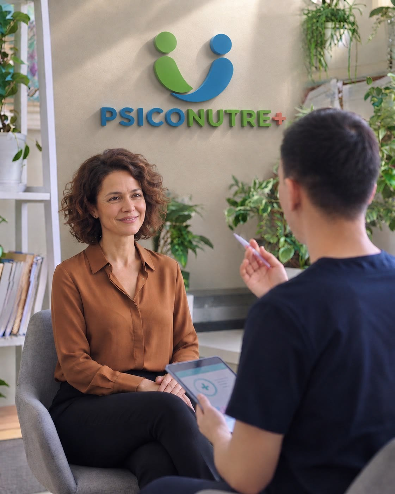
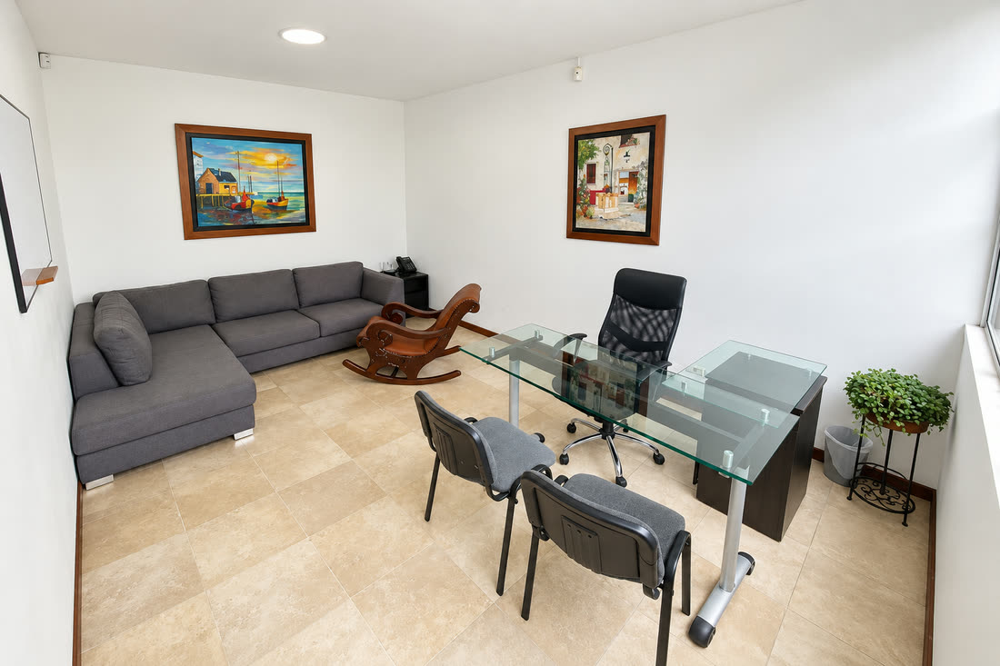
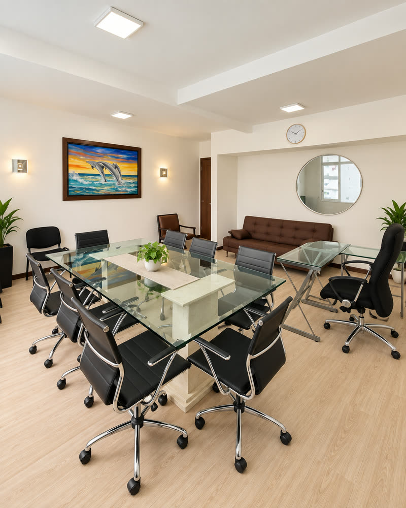

Agendas tu primera sesión
Eliges día y hora en el calendario. Es online, dura una hora y no tiene costo.
Un espacio seguro para gestionar tus emociones, mejorar tu alimentación y recuperar tu tranquilidad. Creado para personas que buscan sentirse mejor, aprendiendo a gestionar sus emociones y pensamientos, así como padres que desean un acompañamiento empático para sus hijos.
Proceso personalizado e integral
Sin costo inicial
100% confidencial

Muchas veces la autocrítica, la soledad o la dificultad para poner límites nos hacen decir "no me siento bien". Si has sentido falta de conexión con otros profesionales, aquí te ofrecemos un proceso terapéutico personalizado, adaptado 100% a tu estilo de aprendizaje y necesidades.
Sabemos que la mente y el cuerpo están conectados. La ansiedad puede alterar tu apetito y los cambios de hábitos pueden generar frustración. Por eso, te brindamos la opción de complementar tu psicoterapia con asesoría nutricional, ayudándote a lograr una adherencia real a tus tratamientos sin presiones.
Explora los pasos hacia la derecha: haz clic en un punto o arrastra la barra.
Queremos que des el primer paso con la menor fricción posible. Selecciona el área en la que tú o tu familia buscan apoyo.
Una valoración con instrumentos clínicos para entender qué está pasando y orientar el tratamiento que corresponde.
AgendarUn espacio uno a uno para trabajar lo que te preocupa, a tu ritmo y adaptado a tu forma de aprender.
AgendarAcompañamiento para mejorar la comunicación, atravesar los conflictos y reconstruir el vínculo.
AgendarTrabajo con el grupo familiar para destrabar las dinámicas que generan malestar y encontrar acuerdos.
AgendarHerramientas concretas para acompañar a tus hijos con límites claros, sin desgastarte en el intento.
AgendarUn espacio confidencial y sin juicios para hablar de sexualidad, vínculos y bienestar íntimo.
AgendarAcompañamiento a niños y adolescentes, con un lenguaje y un ritmo pensados para su edad.
AgendarUn proceso para ordenar intereses, aptitudes, dudas y decidir qué estudiar o hacia dónde seguir con más claridad.
AgendarAcompañamiento para revisar la relación con el consumo y construir cambios que se puedan sostener en el tiempo.
AgendarEl cuerpo y las emociones van juntos. Por eso la parte nutricional se trabaja en coordinación con tu proceso psicológico, y no como algo aparte.
Una pauta armada a tu medida, según tus gustos, tu rutina y tus objetivos, y sin dietas restrictivas.
AgendarOrientación para ordenar tu alimentación y sostener los cambios en el tiempo, junto a tu proceso terapéutico.
AgendarAcompañamiento especializado en la relación con la comida y el cuerpo, con nutrición y psicología trabajando en conjunto.
AgendarNuestro compromiso es brindarte cercanía y confianza. Conoce a nuestro equipo.
Profesional en psicología con formación avanzada en modelos cognitivo-conductuales y de tercera generación. Cuenta con sólida experiencia en la atención individual y grupal de casos de alta complejidad, incluyendo intervención en trauma, conducta suicida, gestión e intervención en crisis, manejo del duelo, así como terapia de pareja, sexología, evaluación psicodiagnóstica, gestión emocional y psicoeducación.
Psicóloga de infancia y adolescencia, enfocada en el abordaje de trastornos del neurodesarrollo y de diversas dificultades comportamentales, emocionales o de aprendizaje en población infantil o sin diagnóstico clínico, esto desde un enfoque cognitivo-conductual que promueve la regulación emocional, el desarrollo de funciones ejecutivas, las habilidades sociales y la orientación a padres en pautas de crianza.
Psicólogo con experiencia en el acompañamiento integral de jóvenes y estudiantes, enfocado en el bienestar emocional, la toma de decisiones, las relaciones interpersonales, la orientación vocacional y el abordaje de adicciones, principalmente en consumo de sustancias psicoactivas, caracterizado por una práctica fundamentada en la escucha activa, la comunicación asertiva y el soporte individualizado.
Psicólogo con enfoque cognitivo-conductual y experiencia en evaluación, intervención, seguimiento, atención en crisis, primeros auxilios psicológicos, regulación emocional y abordaje de dificultades emocionales y conductuales. Experiencia en la atención de población infantil, adulta y adulta mayor, incluyendo personas con discapacidad, esto mediante estrategias de intervención como habilidades de afrontamiento, modificación de conductas y desarrollo de recursos personales.
Nutricionista Dietista enfocado en acompañamiento para la construcción de hábitos saludables, el diseño de planes de alimentación personalizados y el fortalecimiento de una relación saludable con la alimentación, incluyendo orientación nutricional en el abordaje interdisciplinario de los trastornos de la conducta alimentaria.
La atención presencial en este consultorio está disponible actualmente para las consultas con David. También atendemos online para acompañarte estés donde estés.
Carrera 25 #37-78, Teusaquillo, Bogotá, Colombia

No encontrarás una simple "escucha vacía contra un muro". Tendrás un espacio para conectar, expresar tus preocupaciones, conocer nuestra metodología de trabajo (tiempos, precios y planes) y recibir alternativas claras para tu bienestar. Esta primera sesión se realiza siempre online.
¿Prefieres escribir antes? Háblanos por WhatsApp